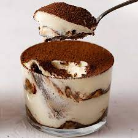

Tiramisu Recipe

A layer of espresso-dipped ladyfingers is topped with a creamy layer of mascarpone flavored with espresso, cognac, with beaten egg whites. Dusted with cocoa powder, this is a classic elegant dessert.
Ingredients
3 large eggs, separated
1 cup brewed espresso or strong coffee, cooled, divided
½ cup sugar
2 tablespoons cognac or brandy
8 ounces BelGioioso Mascarpone cheese
2 tablespoons unsweetened cocoa powder
10 ladyfingers
Steps
- Combine 3 egg yolks, 1 Tbsp. espresso, sugar and cognac into large bowl. Beat 2-3 minutes. Add BelGioioso Mascarpone and beat 3 to 5 minutes until smooth.
- In another bowl, combine 3 egg whites and a pinch of sugar. Beat until stiff peaks form. Gently fold into Mascarpone mixture. (*If using egg substitute, skip step 2 and beat until fluffy.)
- Quickly dip each ladyfinger into remaining espresso and layer on bottom of small serving dish. Spread Mascarpone mixture and sprinkle with cocoa. Refrigerate at least 1 hour before serving.